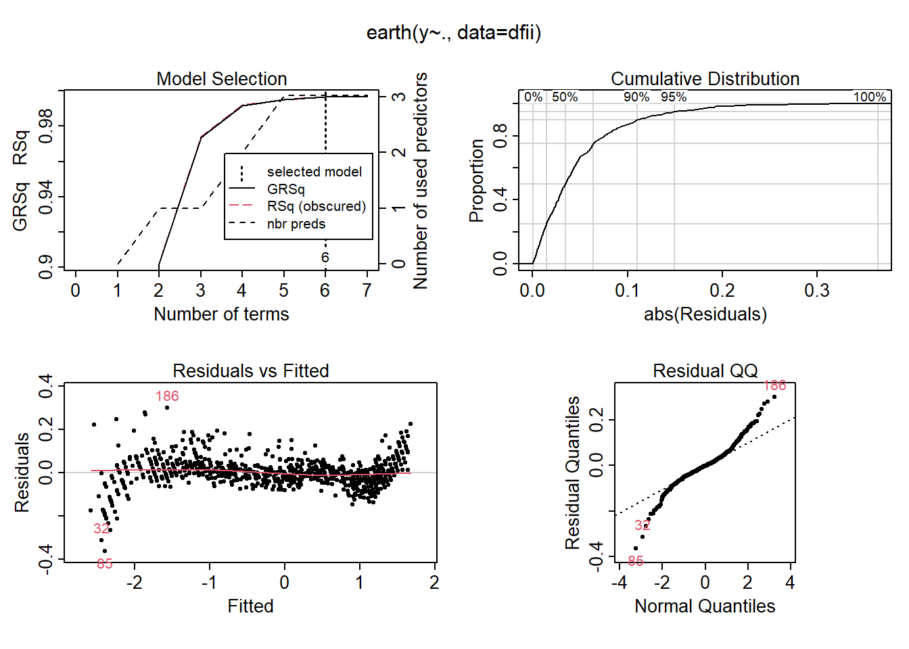
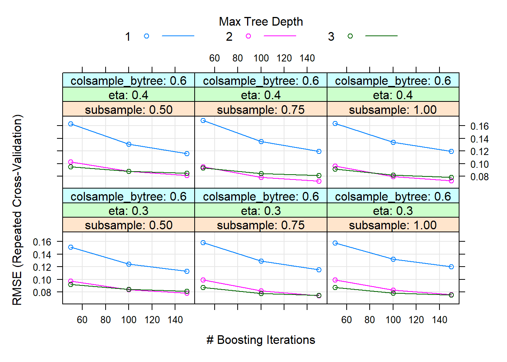
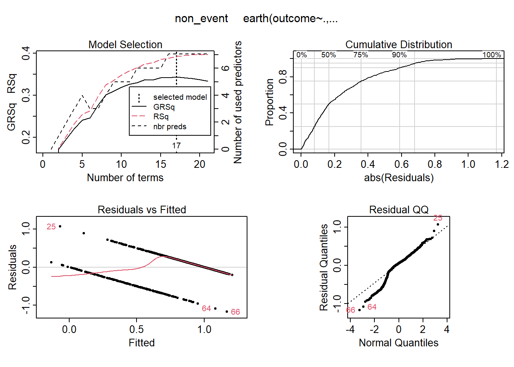
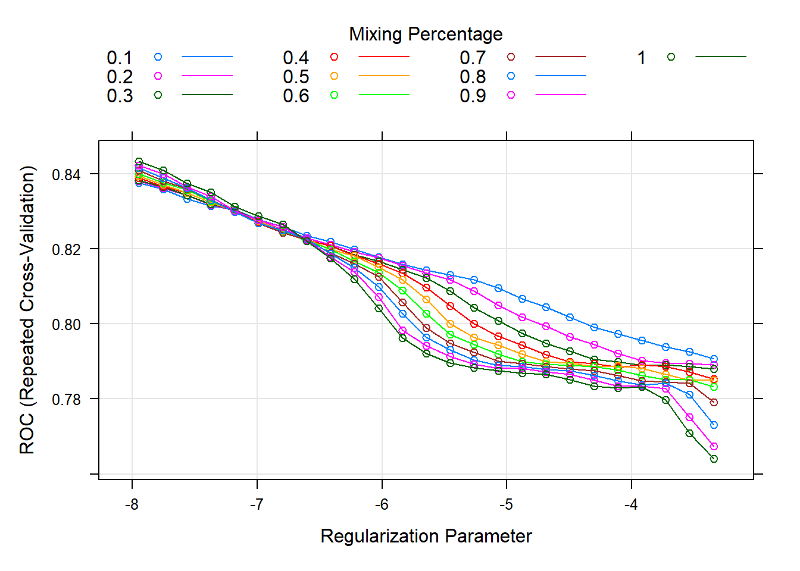

Utilizing Machine Learning to Analyze Paint Colors for PPG Industries
This comprehensive project used various machine learning methods—from simple linear regression to support vector machines and random forest—on a moderate-size paint detail dataset provided by PPG Industries, Inc.
Although it is sometimes difficult distinguish between the variety of paint colors with the human eye, each shade of paint has various properties which can be quantified and analyzed. For a company like PPG, the largest coatings company in the world, it is very important to study their library of paint colors for these properties as slight modifications may result in a significant change in their sales.
In this analysis, we aim to use machine learning techniques to learn patterns associated with PPG’s top selling paint colors. We have been provided with the RGB and HSL color data (to be used as inputs) and two output variables (denoted response and outcome) of PPG’s top selling paint colors. The response is a continuous output associated with an important paint property and the outcome is a binary output associated with the popularity of the paint.
Our analysis will take two main approaches:
response, as a function of the color model inputs.In this sense, we will use the following tools, technologies, and techniques:
R programming language with the Tidyverse package, Caret package, and many other libraries specific to different parts of projectThroughout our analysis, we will attempt to answer relevant question such as:
|  |  |
|---|---|
| Multivariate Additive Regression Splines Result | XGBoost Model Result |
|  |  |
|---|---|
| Classifier Result | Regularization Result |
{kind=link}
{kind=link}
{kind=link}
{kind=link}